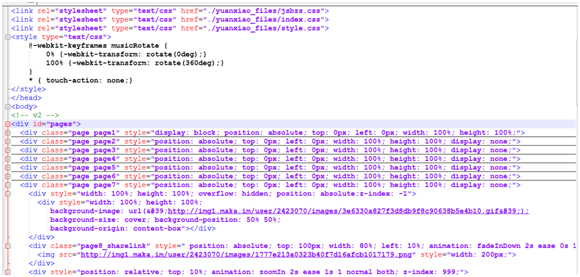

课程设计说明
此次课程设计选择做的题目是'祝福H5'。在开始课程设计后决定通过课上学到的知识以及课外知识自己亲手去设计一个html5页面，通过从以前制作过的元宵节html5页面以及以及春节祝福html，在原有的基础上，对页面进行更多精美的设计，添加一些不一样的图片，特效以及更换背景音乐等。无论什么类型的网站，都离不开叙述性的蚊子。离开了文字即使图片再华丽，也表达不了清楚的意思。所以制作一个成功的网站，必须有足够较好的文字资料。我的文字资料都是在网上找的，因为我做的是中秋节的节日祝福h5，在网上很容易找到资料。当然一个网站也不可以只有文字资料，那样会让人乏味，读起来毫无兴趣，所以图片资料也是必不可少的。因为一些文字加上图片不仅可以使网页变得更加生动，让读者了解更多的信息，增加浏览者的印象，网站也不会枯燥乏味。也能很好的传递作者想表达的意思。所以我通过在网上一些h5的模版中提取到一些合适的图片以及在网上收到一些图片，并同过PS把图片修到适合网页的样式再放入h5。最后还在其他网站上参考了一些h5的做法。
部分代码：

通过这次实训，我收获了很多。从前端开发的基础出发，学习使用HTML，CSS，JavaScript等一系列前端技术，实现动画特效。以开发实例展示为主导，循序渐进让学员掌握H5技术的应用。强化自己的基础。这次课程设计让我了解了文档结构和基础语法，了解html5的特效，css3基础语法和布局样式，图形图像等软件的使用。还学会了使用git上传文件到gitpub实现用域名打开h5及在实训中除了学到了许多新的知识，还锻炼了我做项目的能力，提高了独立思考问题、 自己动手操作的能力。一、继续学习，不断充实自我。 在实训中除了学到了许多新的知识，了解了关于 HTML5 的相关知识，对互联网+有了 新的认识，对于未来工作的方向也多了一种选择。 二、努力实践，不断提升自我。 只有将理论付诸于实践才能实现理论自身的价值， 也只有将理论付诸于实践才能使理论 得以检验。同样，一个人的价值也是通过实践活动来实现的，也只有通过实践才能锻炼人的 品质，彰显人的意志。这次能够独立完成了一个项目，满满的激动，未来还要更加努力。 三、 完善总结，不断深造自我。 实训，展现在自己面前的是一片任自己驰骋的沃土，耕种梦想，成就未来。我将继续学 习，深入实践，不断提升自我，多反思，多总结，吸取经验，为以后打下基础。 可以说这次实训不仅使我学到了知识， 丰富了经验； 将会有利于我更好的适应以后的工 作。 最后， 我要感谢学院组织的这次十分有意义的实训， 使我们学到了很多， 也领悟了很多。